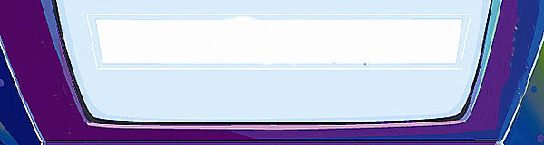
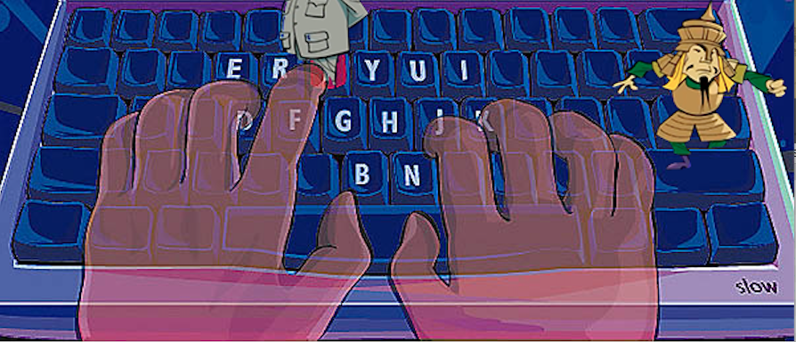

2006

I took a computers class in 2006 at my school where I had to take I typing program called Garfield's Typing Pal which I had a hard time completing the assignments.
I remember that one of my inclass assginments,I had to create overlapping shapes in the Paint app and I also had fun playing aroudn with the different fonts that were included.

2007


At my new school, I learned how to type in a program called "Type To Learn 3" which I ended up completing.
In the program, a character called father time takes you in his time traveling machine into important historical events as you complete different fun games.
It does get harder to complete the lessons once you progress with the game.


2009

Around this time, I started playing Club Penguin which was an online virtual gaming world where you create a penguin
character and have adventure at the penguin island. At the Club Penguin island, you can play job games where you can earn money and buy puffles (pets)
clothes, and funiture for your igloo, if you pay for a membership. Some of my favorite games that I had my character participate in was doing top secret spy missions and competing with other players
players at the Dojo doing elemental kung fu.
2012
I was introduced to the Online gaming virtual world of Poptropica. The world of Poptropica is filled with islands and each island are themed differently. On each island,
you can complete a specific mission the island has to offer and once you complete the island, you receive a medallion and 100 credits. With these credits, you can buy costumes for your character.
What I really loved about this game is that I was the hero of the world of Poptropica where I could defeat villains. I could become a pirate, a spy, a superhero, a detective, an astronaut, and many other things.
I also went to Youtube to look at Walkthroughs so I could complete the games.
2014
This was the time I got a Facebook and started playing mobile games and my favorite one of them all was Happy Aquarium which was a virtual game where you could
create a virtual aquarium, buy virutal fish, feed them, decorate your tank, train you fish, earn coins as you level up and visit your friend's virtual tank.